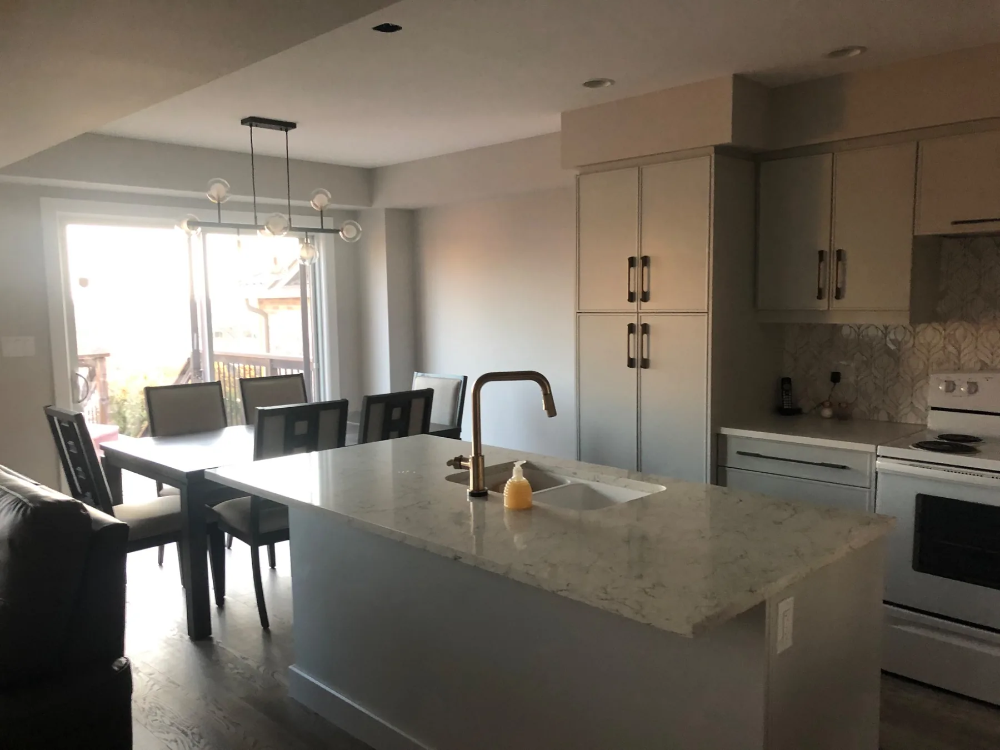
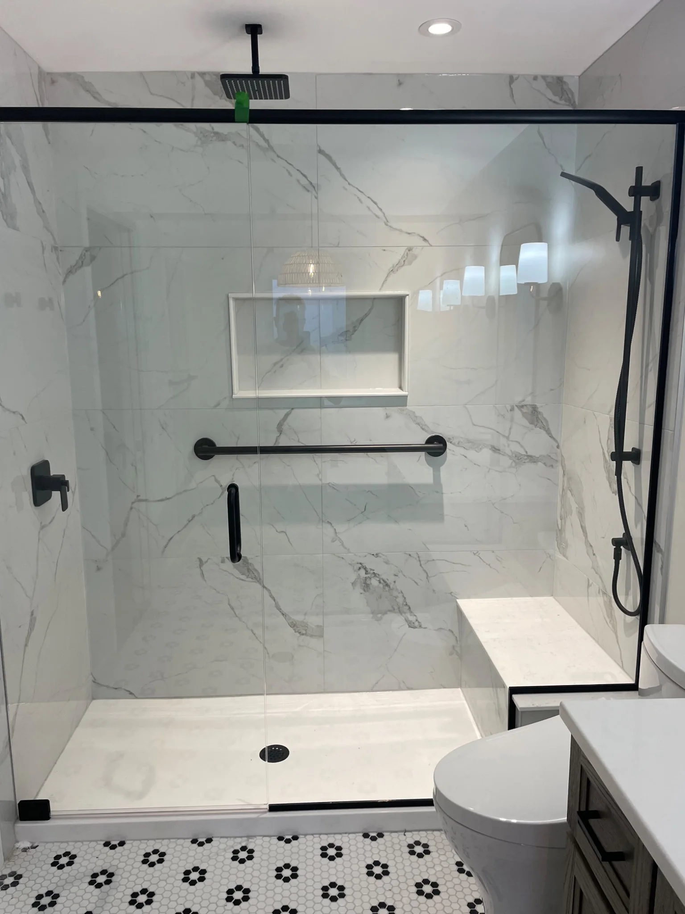
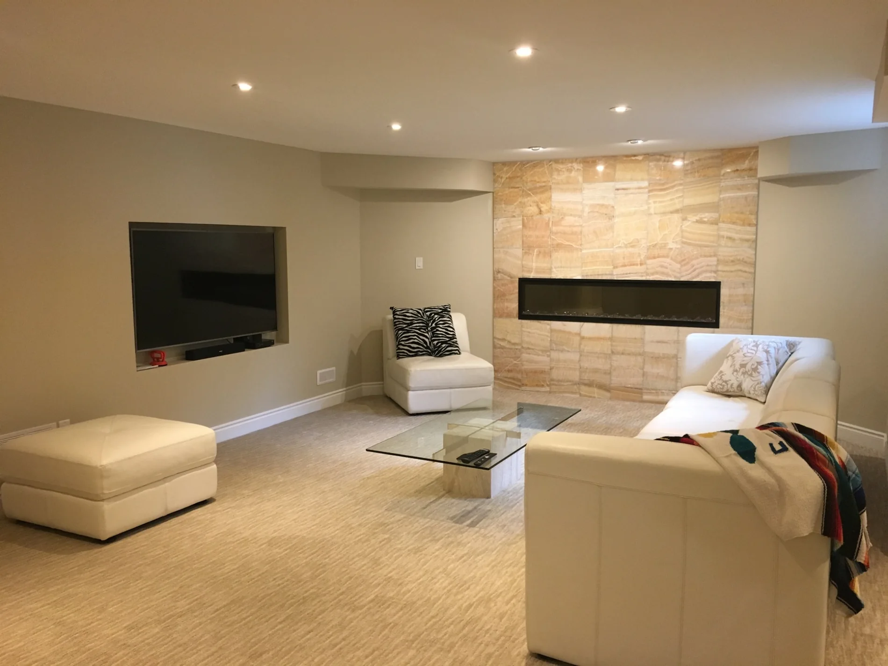
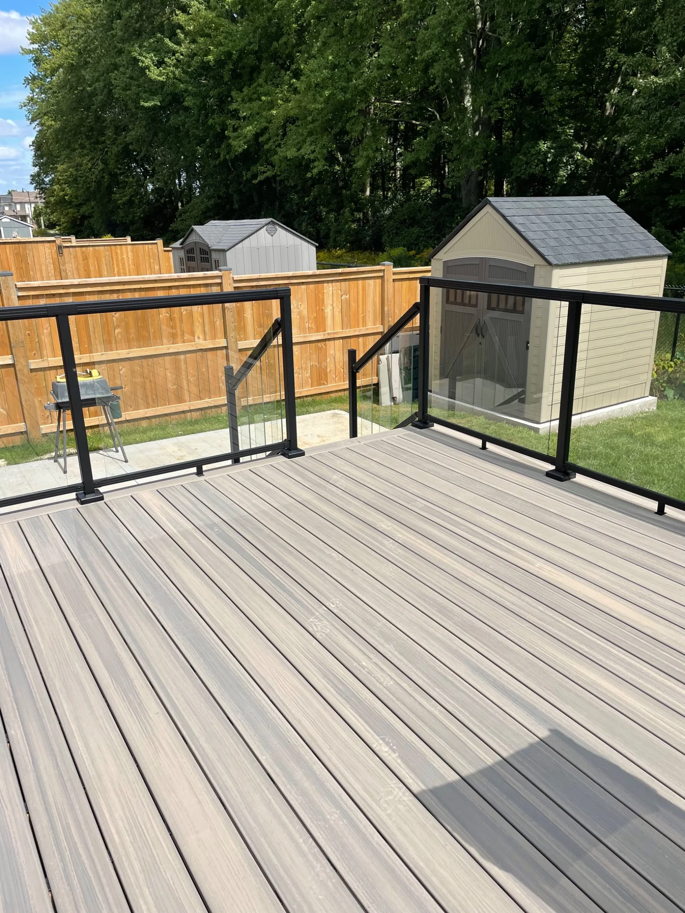
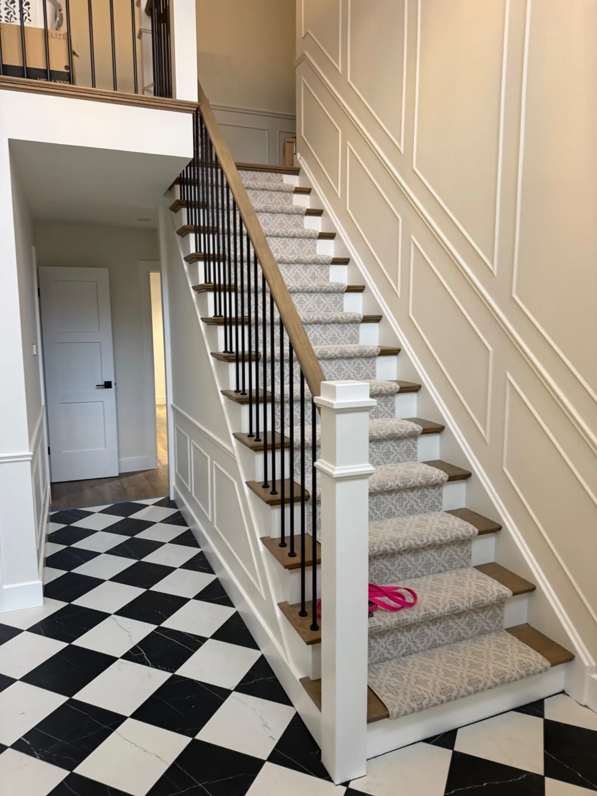
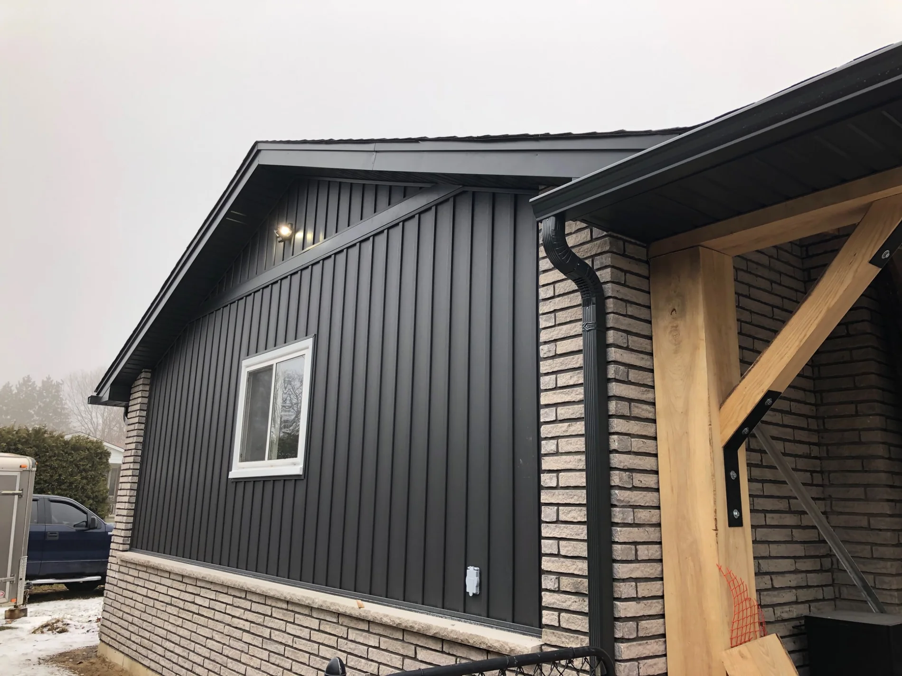

London, Ontario & surrounding communities
Renovations built with pride and precision.
Thoughtful planning, trusted trades and exceptional craftsmanship for kitchens, bathrooms, basements, additions and outdoor living spaces.
Licensed trades · Fully insured · WSIB-compliant trades · 3-year workmanship warranty
Our Services
Beautiful spaces designed for real life.
We coordinate each renovation from planning through completion, with careful attention to communication, workmanship and the details that make a home feel complete.

KitchensCustom kitchens built around how you live.
BathroomsComfortable, durable and beautifully finished.
BasementsFinished living spaces that add real value.AdditionsSeamless expansions for growing homes.
Outdoor LivingDecks, railings, patios and covered spaces.
Whole HomeCoordinated renovations with a consistent finish.Why Iron Oak
A renovation partner you can trust in your home.
Iron Oak Renovations was founded on a simple idea: homeowners deserve clear communication, skilled workmanship and a contractor who takes pride in every detail. We work with licensed trades, maintain full insurance and ensure our trades are WSIB compliant.

Featured Work
Real projects. Lasting craftsmanship.
Start your renovation